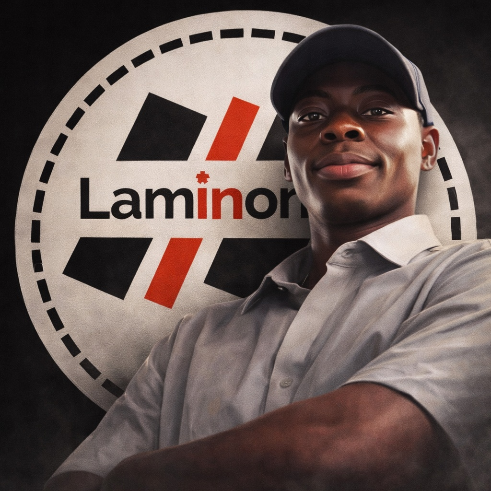

In a world where memories can be traded like currency, one archivist discovers a recollection that could unravel the fabric of society. A gripping tale of identity, loss, and the price of perfection.

Laminono Nexus is more than a name—it's a creative identity. Founded by Olamide Emmanuel Willoughby, Laminono blends storytelling, visual creativity, and digital strategy to craft powerful experiences. From emotionally driven stories to high-converting social media content, every creation is designed to resonate, inspire, and influence.
— Laminono
Laminono — The Storyteller
"Stories are the currency of human connection. I aim to make us all rich."
— Laminono
Comments (0)